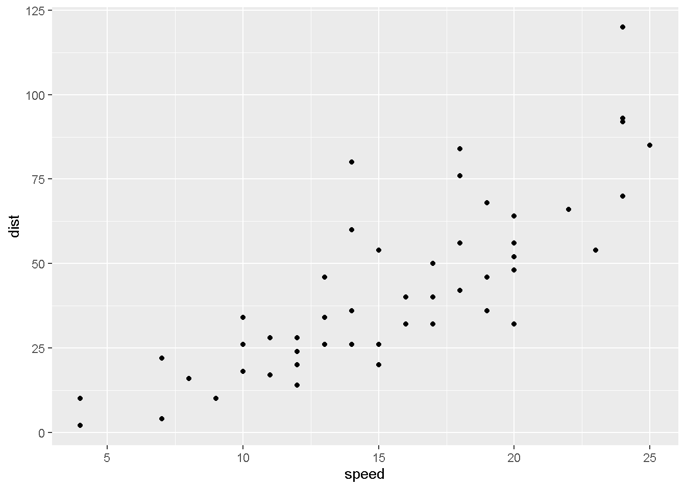

Grafico de disperción
El grafico de diesperión, nos permite representar la relación entre dos variables continuas.
Librerias necesarias
library(reticulate)
library(ggplot2)
library(dplyr)
import numpy as np
import matplotlib.pyplot as plt
Grafico de dispercion con R
cars %>% ggplot(aes(x=speed,y=dist)) + geom_point()

Grafico de disperción con Python
plt.clf()
x=np.array(r.cars["speed"])
y=np.array(r.cars["dist"])
plt.scatter(x,y)
plt.show()